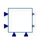

Drive train for wind turbines
This package contains components that model the wind drive train component of wind turbines for the WECC-based renewable energy sources.
| Name | Description |
|---|---|
| WTDTA1 | Generic Drive Train Model for Type 3 and Type 4 Wind Machines |
| Base classes for renewable energy drive train models from PSSE |

OpenIPSL.Electrical.Renewables.PSSE.WindDriveTrain.WTDTA1Generic Drive Train Model for Type 3 and Type 4 Wind Machines
The WTDTA1 component is a simplified model for the purpose of emulating the behavior of torsional mode oscillations. The wind turbine shaft damping coefficient (Dshaft) in the drive-train model represents the net damping of the torsional mode seen in the post fault electrical power response. In real equipment, the drive train oscillation are damped through active control signals, much different from the simple two mass drive train model represents in the WTDTA1 component. Thus, the drive-train is not a real physical representation of the real drive-train.
The modelling of such devices is based, mainly, on the following references:
Extends from OpenIPSL.Electrical.Renewables.PSSE.WindDriveTrain.BaseClasses.BaseWTDT (Base class for the drive train of the WECC generic renewable models).
| Name | Description |
|---|---|
| W0 | [1] |
| H | Total inertia constant (No predefined range) [s] |
| DAMP | Machine damping factor (No predefined range) [1] |
| Htfrac | Turbine inertia fraction, Ht/H (No predefined range) |
| Freq1 | First shaft torsional resonancy frequency (No predefined range) [Hz] |
| Dshaft | Shaft damping factor (No predefined range) [1] |
| Power flow data | |
| S_b | System base power [V.A] |
| V_b | Base voltage of the bus [V] |
| fn | System frequency [Hz] |
| P_0 | Initial active power [W] |
| Q_0 | Initial reactive power [var] |
| v_0 | Initial voltage magnitude [1] |
| angle_0 | Initial voltage angle [rad] |
| displayPF | Display power flow: |
| Name | Description |
|---|---|
| Pm | Mechanical Power |
| Pe | Electrical Power |
| wt | Rotational Speed Deviation Turbine Blade |
| wg | Rotational Speed Deviation Generator |
| W_0 | |
| P0 |